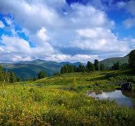

Природні цікаві факти про Україну
Україна має багату історію та культуру, а також багато цікавих фактів, які здивують навіть тих, хто добре знайомий з нашою країною. В цій статті ми розглянемо деякі найцікавіші факти про Україну, які заслуговують на вашу увагу.
Місце України у світі
Україна є найбільшим у світі виробником насіння соняшнику, і в кожній частині України ви побачите приголомшливі поля цих
жовтих квітів — так багато, що ними можна було б покрити всю Словенію!
Заповідник “Асканія-Нова” – найстаріший у світі степовий заповідник. Він є домом для 500 видів рослин і 3000 видів
тварин.
Єдина у світі Підводна річка в Чорному морі — унікальна придонна течія, яка переносить сильно солону воду з Мармурового
моря через Босфор вздовж дна Чорного моря. Жолоб, по якому тече ця річка, має глибину близько 35 метрів, ширину 1
кілометр і довжину приблизно 60 кілометрів. Швидкість течії досягає 6,5 км/год, що робить її однією з найповноводніших
річок у світі, якби вона була на поверхні. Підводна річка має типові річкові особливості, такі як береги, заплави,
пороги та водоспади. Це унікальне явище було виявлено вченими з Лідського університету у 2010 році.
Ніде у світі ви не знайдете стільки унікальних гіпсових печер на такій невеликій території, як на українському Поділлі.
Печера Оптимістична — найдовша печера в Євразії та п’ята за довжиною печера у світі.
Місце України в Європі
Україна є найбільшою за площею країною в Європі. Загальна площа України становить 603,55 кв. км.
Україну часто називають “житницею Європи”, оскільки вона має ідеальні умови для вирощування пшениці і є великим
виробником зерна.
Україна є лідером у Європі та другою у світі за запасами марганцевих руд (2,28 мільярда тонн), поступаючись лише
Південно-Африканській Республіці.
Географічний центр Європи розташований у Закарпатській області, неподалік від селища Ділове. Це один з п’яти
загальновизнаних центрів континенту, але не єдиний, оскільки спосіб обчислення координат залежить від вашого підходу
(інші знаходяться в Литві, Білорусі, Словаччині та Польщі).
Найбільша пустеля в Європі знаходиться на півдні України. Олешківські піски, розташовані в 30 км на схід від Херсона, є
найбільшим піщаним масивом в Європі.
Українські Карпати
В Україні, неподалік міста Хуст в Закарпатській області, розташована Долина нарцисів — захоплююче і красиве місце, яке є
великим природним заповідником, повністю вкритим цими квітами. Цей заповідний масив, розміщений в урочищі Кіреші,
знаходиться за 4 км на схід від Хуста і перебуває під охороною ЮНЕСКО. Дивитись координати на мапі.
Гора Говерла — найвища гора в Україні. Її висота 2061 м. Гора Говерла є частиною Карпатських гір. З кінця 19-го століття
ця гора є визначною туристичною пам’яткою. З роками гора набуларистичною пам’яткою. З роками гора набула популярності і
як місце для екстремальних видів спорту.
Інші цікавинки про Україну
Знаменитий Тунель кохання знаходиться біля міста Клевань, це залізнична колія для приватного потягу, який забезпечує
деревиною місцеву фабрику.
Острів Зміїний — це єдиний природний дім золотистої гадюки, що перебуває під загрозою зникнення, яка потрапила в пастку
на острові під час останнього льодовикового періоду.